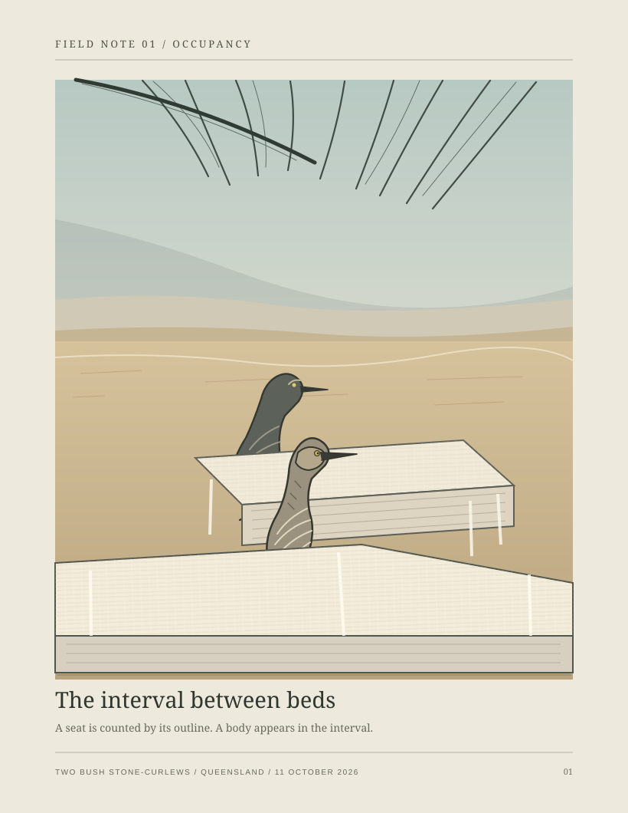
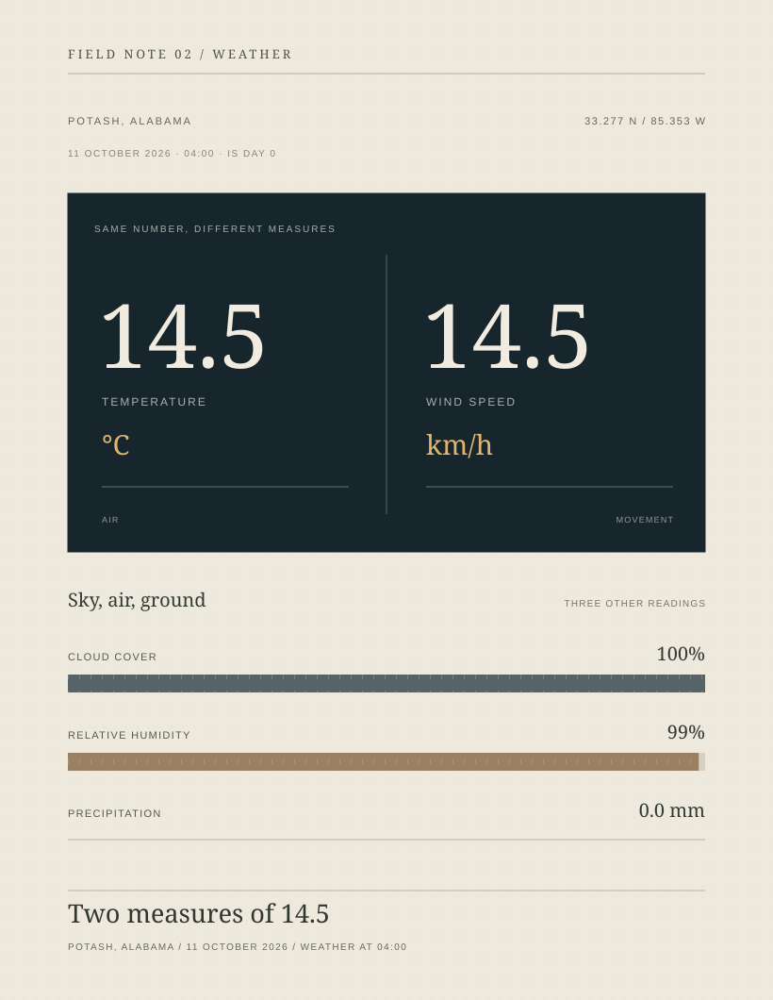
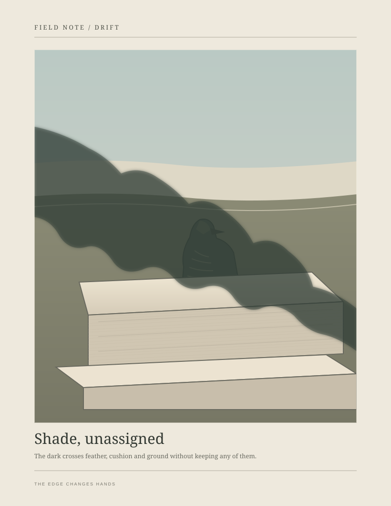

Two bush stone-curlews appear in the narrow measure between upholstered edges.

In Potash, temperature and wind speed share a number but not a unit.

A loose patch of shade passes across feather, upholstery and ground without keeping any of them.
A score for following a fixed edge interrupted by a body and finding where it resumes.